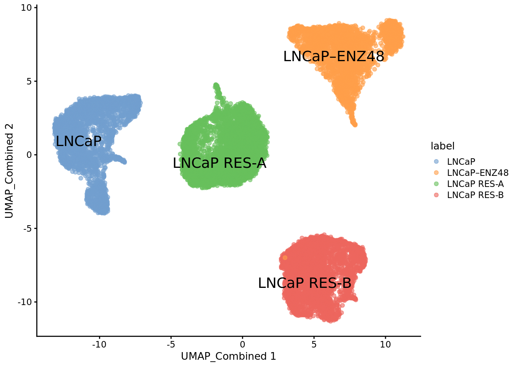
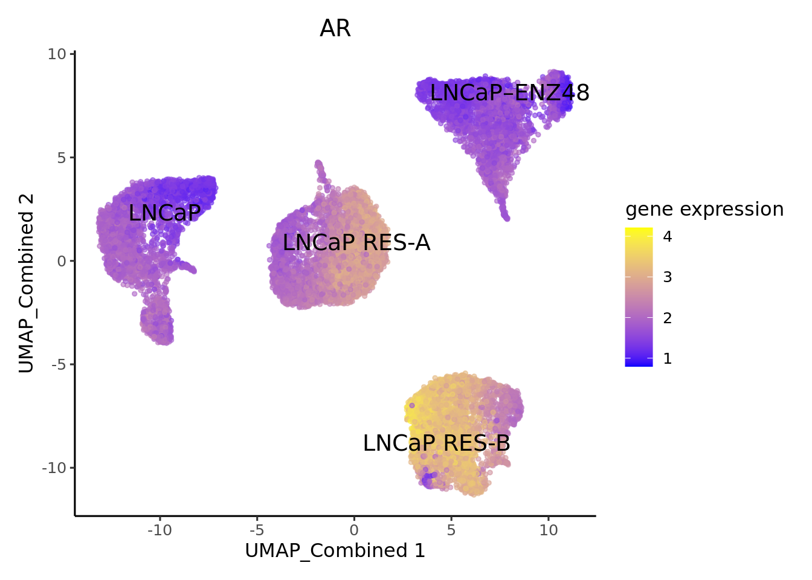
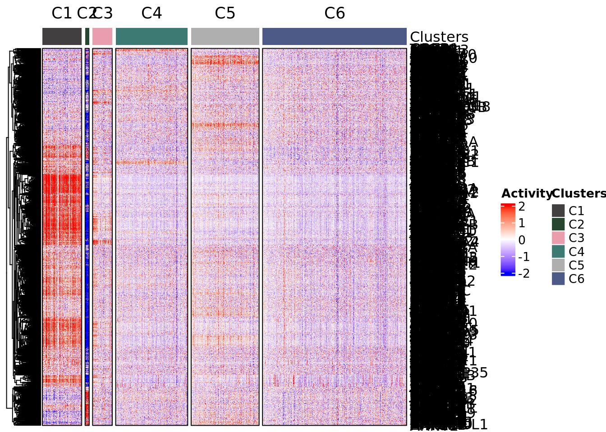
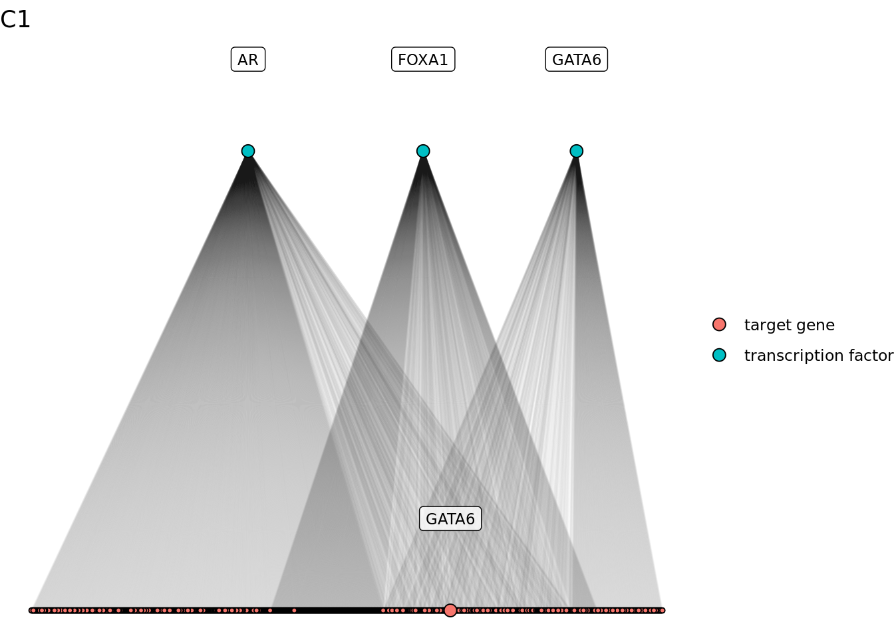
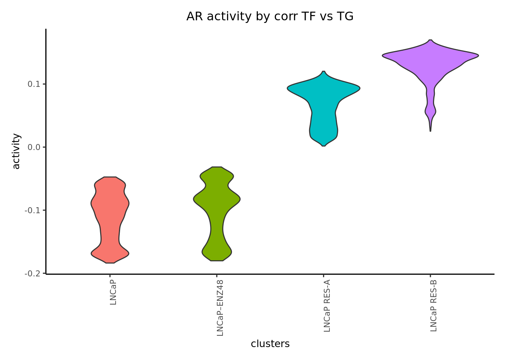
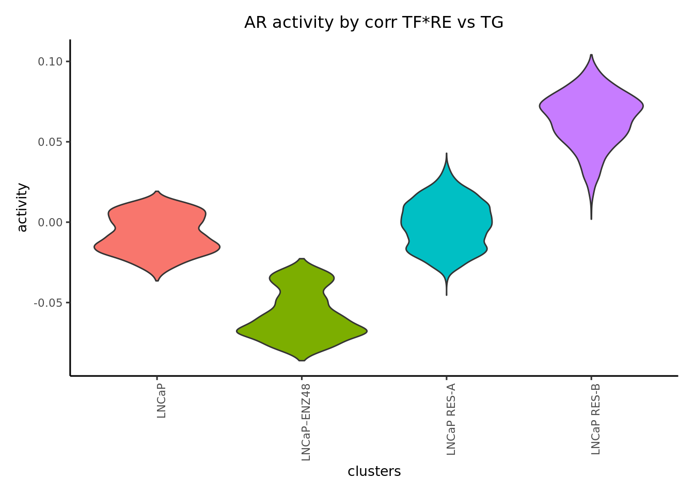
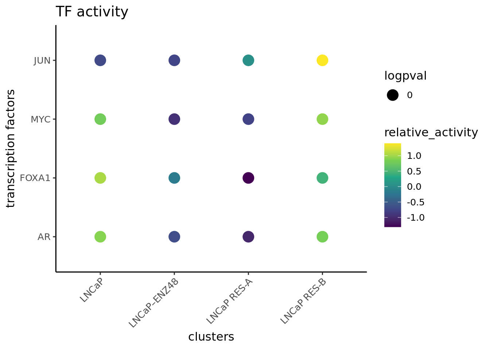
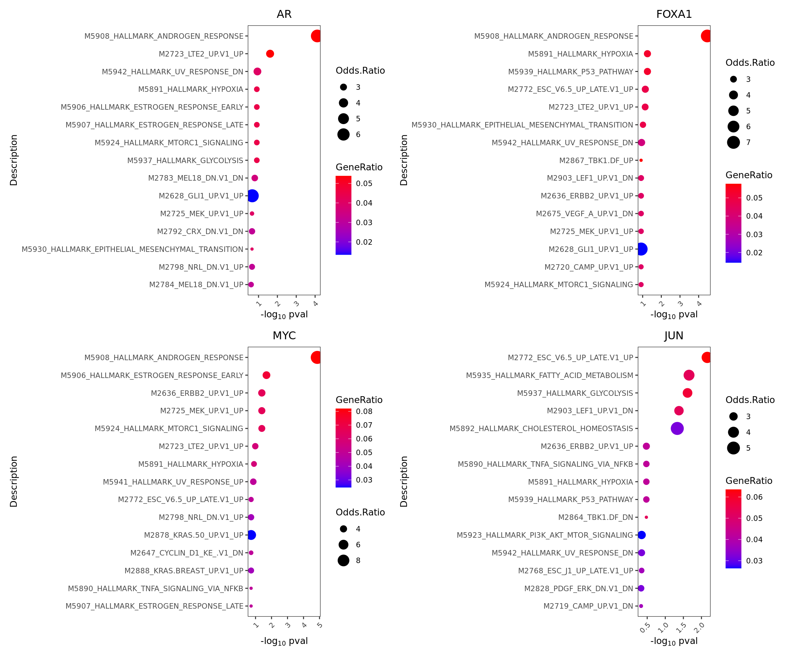

4 Prostate cancer cells
This tutorial walks through an example of TF activity inference in unpaired scATACseq/scRNAseq of parental LNCaP cells treated with DMSO, Enzalutamide and Enza resistant cells. The dataset was taken from Taavitsainen et al GSE168667 and GSE168668.
4.1 Data preparation
Please refer to the full ArchR manual for instructions
Before running Epiregulon, the following analyses need to be completed: 1. Obtain a peak matrix on scATACseq by using addGroupCoverages > addReproduciblePeakSet > addPeakMatrix. See chapter 10 from ArchR manual 2. RNA-seq integration. a. For unpaired scATAC-seq, use addGeneIntegrationMatrix. See chapter 8 from ArchR manual b. For multiome data, use addGeneExpressionMatrix. See multiome tutorial 3. Perform dimensionality reduction from with either single modalities or joint scRNAseq and scATACseq using addCombinedDims
4.1.1 Load ArchR project
Copy this ArchR project into your own directory
library(ArchR, quietly = TRUE)
archR_project_path <- "/gstore/project/lineage/prostate/GSE168667/OUTPUT/multiome/"
proj <- loadArchRProject(path = archR_project_path, showLogo = FALSE)We verify that “GeneExpressionMatrix” and “PeakMatrix” are present for this tutorial.
getAvailableMatrices(proj)## [1] "GeneIntegrationMatrix" "GeneScoreMatrix" "MotifMatrix" "PeakMatrix"
## [5] "TileMatrix"We will use the joint reducedDims - “LSI_Combined” and joint embeddings - “UMAP_Combined”
head(getReducedDims(proj, reducedDims = "iLSI_Combined")[,1:5])## LSI1 LSI2 LSI3 LSI4 LSI5
## SRR13927735#TTATGTCTCCAGGTAT-1 -2.713935 -0.3677949 -0.4484238 -0.30645138 -0.046845365
## SRR13927735#TATTGCTCATCAGAAA-1 -2.642781 -0.2767556 -0.9142714 -0.19675812 0.075746940
## SRR13927735#TTCGATTGTAGGGTTG-1 -2.322865 -0.1543080 -1.4106049 -0.08891276 0.019873276
## SRR13927735#CATTCATTCGGATGTT-1 -2.572976 -0.1917188 -1.0464294 -0.12660121 0.009947438
## SRR13927735#ACGTTAGGTCAACTGT-1 -2.478552 -0.1776639 -1.1037295 -0.22976613 -0.150097539
## SRR13927735#AAATGCCCAGCAATGG-1 -2.595352 -0.3803464 -0.7770309 -0.52431765 -0.243074591head(getEmbedding(proj, embedding = "UMAP_Combined"))## iLSI_Combined#UMAP_Dimension_1 iLSI_Combined#UMAP_Dimension_2
## SRR13927735#TTATGTCTCCAGGTAT-1 -9.622903 -0.2908237
## SRR13927735#TATTGCTCATCAGAAA-1 -9.360211 -0.2892935
## SRR13927735#TTCGATTGTAGGGTTG-1 -8.617347 -0.2154103
## SRR13927735#CATTCATTCGGATGTT-1 -9.285448 -0.3267481
## SRR13927735#ACGTTAGGTCAACTGT-1 -8.809260 -0.2168703
## SRR13927735#AAATGCCCAGCAATGG-1 -9.261216 0.32003564.1.2 Retrieve matrices from ArchR project
Retrieve gene expression and peak matrix from the ArchR project
GeneExpressionMatrix <- getMatrixFromProject(
ArchRProj = proj,
useMatrix = "GeneIntegrationMatrix",
useSeqnames = NULL,
verbose = TRUE,
binarize = FALSE,
threads = 1,
logFile = "x"
)## 2023-11-16 04:59:12.318765 : Organizing colData, 2.355 mins elapsed.## 2023-11-16 04:59:13.665112 : Organizing rowData, 2.378 mins elapsed.## 2023-11-16 04:59:13.673924 : Organizing rowRanges, 2.378 mins elapsed.## 2023-11-16 04:59:13.687843 : Organizing Assays (1 of 1), 2.378 mins elapsed.## 2023-11-16 04:59:24.951508 : Constructing SummarizedExperiment, 2.566 mins elapsed.## 2023-11-16 04:59:27.963868 : Finished Matrix Creation, 2.616 mins elapsed.PeakMatrix <- getMatrixFromProject(
ArchRProj = proj,
useMatrix = "PeakMatrix",
useSeqnames = NULL,
verbose = TRUE,
binarize = FALSE,
threads = 1,
logFile = "x"
)## 2023-11-16 05:01:10.816798 : Organizing colData, 1.704 mins elapsed.## 2023-11-16 05:01:17.735813 : Organizing rowData, 1.82 mins elapsed.## 2023-11-16 05:01:17.759332 : Organizing rowRanges, 1.82 mins elapsed.## 2023-11-16 05:01:17.78914 : Organizing Assays (1 of 1), 1.82 mins elapsed.## 2023-11-16 05:01:25.964201 : Constructing SummarizedExperiment, 1.957 mins elapsed.## 2023-11-16 05:01:47.175251 : Finished Matrix Creation, 2.31 mins elapsed.If we extract the gene expression from matrix, it will be in the form of RangedSummarizedExperiment.
We can make use of ArchRMatrix2SCE to convert gene expression matrix to SingleCellExperiment object.
It’s also important to note that gene expression from ArchR is library size normalized. We further transform it to logcounts by adding a pseudocount of 1 and taking log2.
library(epiregulon)
GeneExpressionMatrix <- ArchRMatrix2SCE(GeneExpressionMatrix)
rownames(GeneExpressionMatrix) <- rowData(GeneExpressionMatrix)$name
assay(GeneExpressionMatrix) <- as(log2(assay(GeneExpressionMatrix)+1), "CsparseMatrix")## Warning in asMethod(object): sparse->dense coercion: allocating vector of size 2.7 GiBWe rename the assay name of the PeakMatrix as counts
assayNames(PeakMatrix) <- "counts"Transfer embeddings from ArchR project to singleCellExperiment
reducedDim(GeneExpressionMatrix, "UMAP_Combined") <- getEmbedding(ArchRProj = proj,
embedding = "UMAP_Combined",
returnDF = TRUE)[colnames(GeneExpressionMatrix),]
# add cell label
GeneExpressionMatrix$label <- GeneExpressionMatrix$Cells
GeneExpressionMatrix$label[GeneExpressionMatrix$Treatment == "enzalutamide 48h"] <- "LNCaP–ENZ48"
GeneExpressionMatrix$label <- factor(GeneExpressionMatrix$label,
levels = c("LNCaP", "LNCaP–ENZ48", "LNCaP RES-A", "LNCaP RES-B"))Visualize singleCellExperiment by UMAP
scater::plotReducedDim(GeneExpressionMatrix,
dimred = "UMAP_Combined",
text_by = "label",
colour_by = "label")
4.2 Quick start
4.2.1 Retrieve bulk TF ChIP-seq binding sites
First, we retrieve the information of TF binding sites collected from Cistrome and ENCODE ChIP-seq, which are hosted on Genomitory. Currently, human genomes HG19 and HG38 and mouse mm10 are available.
grl <- getTFMotifInfo(genome = "hg38")## snapshotDate(): 2023-10-24## see ?scMultiome and browseVignettes('scMultiome') for documentation## loading from cachehead(grl)## GRangesList object of length 6:
## $`5-hmC`
## GRanges object with 24048 ranges and 0 metadata columns:
## seqnames ranges strand
## <Rle> <IRanges> <Rle>
## [1] chr1 10000-10685 *
## [2] chr1 13362-13694 *
## [3] chr1 29631-29989 *
## [4] chr1 40454-40754 *
## [5] chr1 135395-135871 *
## ... ... ... ...
## [24044] chrY 56864377-56864627 *
## [24045] chrY 56876124-56876182 *
## [24046] chrM 84-2450 *
## [24047] chrM 13613-14955 *
## [24048] chrM 15134-16490 *
## -------
## seqinfo: 25 sequences from an unspecified genome; no seqlengths
##
## ...
## <5 more elements>4.2.2 Link ATAC-seq peaks to target genes
Next, we compute peak to gene correlations using the addPeak2GeneLinks function from the ArchR package. The user would need
to supply a path to an ArchR project already containing peak and gene matrices, as well as Latent semantic indexing (LSI) dimensionality reduction.
# path to ArchR project
p2g <- calculateP2G(ArchR_path = archR_project_path,
useDim = "iLSI_Combined",
useMatrix = "GeneIntegrationMatrix",
threads = 1,
exp_assay = "counts")## Setting ArchRLogging = FALSE## Using ArchR to compute peak to gene links...## 2023-11-16 05:02:38.171143 : Getting Available Matrices, 0 mins elapsed.## 2023-11-16 05:02:40.09098 : Filtered Low Prediction Score Cells (0 of 15522, 0), 0.004 mins elapsed.## 2023-11-16 05:02:40.812092 : Computing KNN, 0.016 mins elapsed.## 2023-11-16 05:02:42.493239 : Identifying Non-Overlapping KNN pairs, 0.044 mins elapsed.## 2023-11-16 05:02:45.076766 : Identified 498 Groupings!, 0.087 mins elapsed.## 2023-11-16 05:02:45.135121 : Getting Group RNA Matrix, 0.088 mins elapsed.## 2023-11-16 05:05:22.724452 : Getting Group ATAC Matrix, 2.715 mins elapsed.## 2023-11-16 05:08:04.849444 : Normalizing Group Matrices, 5.417 mins elapsed.## 2023-11-16 05:08:13.579048 : Finding Peak Gene Pairings, 5.562 mins elapsed.## 2023-11-16 05:08:14.133928 : Computing Correlations, 5.571 mins elapsed.## 2023-11-16 05:08:23.483094 : Completed Peak2Gene Correlations!, 5.727 mins elapsed.head(p2g)## DataFrame with 6 rows and 8 columns
## idxATAC chr start end idxRNA target Correlation distance
## <integer> <factor> <integer> <integer> <integer> <character> <numeric> <numeric>
## 1 15 chr1 912762 913262 7 NOC2L 0.546722 46297
## 2 15 chr1 912762 913262 8 KLHL17 0.516539 47575
## 3 25 chr1 920261 920761 7 NOC2L 0.649425 38798
## 4 25 chr1 920261 920761 8 KLHL17 0.637711 40076
## 5 32 chr1 927728 928228 7 NOC2L 0.610240 31331
## 6 32 chr1 927728 928228 8 KLHL17 0.550093 326094.2.3 Add TF motif binding to peaks
The next step is to add the TF motif binding information by overlapping the regions of the peak matrix with the bulk chip-seq database loaded in 2. The user can supply either an archR project path and this function will retrieve the peak matrix, or a peakMatrix in the form of a Granges object or RangedSummarizedExperiment.
overlap <- addTFMotifInfo(archR_project_path = archR_project_path, grl = grl, p2g = p2g)## Successfully loaded ArchRProject!## Computing overlap...## Success!4.2.4 Generate regulons
A long format dataframe, representing the inferred regulons, is then generated. The dataframe consists of three columns:
- tf (transcription factor)
- target gene
- peak to gene correlation between tf and target gene
regulon <- getRegulon(p2g = p2g, overlap = overlap, aggregate = FALSE)
head(regulon)## DataFrame with 6 rows and 10 columns
## idxATAC chr start end idxRNA target corr distance idxTF tf
## <integer> <factor> <integer> <integer> <integer> <character> <matrix> <numeric> <integer> <character>
## 1 15 chr1 912762 913262 8 KLHL17 47575 10 AGO1
## 2 15 chr1 912762 913262 8 KLHL17 47575 22 AML1-ETO
## 3 15 chr1 912762 913262 8 KLHL17 47575 32 ARID4A
## 4 15 chr1 912762 913262 8 KLHL17 47575 33 ARID4B
## 5 15 chr1 912762 913262 8 KLHL17 47575 34 ARID5B
## 6 15 chr1 912762 913262 8 KLHL17 47575 80 BCOREpiregulon computes weights using either correlation, linear regression, mutual information, log fold change or wilcoxon rank sum test. The choice of methods depends on the datasets. Correlation works best when increased TF activity results from increased TF expression, such in the case of normal development. The user has a choice between computing the correlation of TF expression vs target gene expression by setting method = "corr", or the product of TF expression and chromatin accessibility at TF-bound regulatory elements vs target gene expression by setting method = "corr" and "tf_re.merge = TRUE.
In the case of drug treatment, however, the activity of TF is suppressed often not by downregulation of the TF gene expression, but by direct interference of the TF protein function. In this dataset, the drug enzalutamide blocks the ligand binding domain of the androgen receptor and prevents it from binding to the chromatin. As a result, while the AR gene expression stays the same, the chromatin accessibility of AR, as computed by chromVar in the ArchR package, is greatly reduced by 48 hour treatment of enzalutamide.
First, we visualize the AR expression and observed that enzalutamide did not decrease AR expression.
plotActivityDim(sce = GeneExpressionMatrix,
activity_matrix = assay(GeneExpressionMatrix),
tf = "AR",
dimtype = "UMAP_Combined",
label = "label",
point_size = 1,
legend.label = "gene expression")
Then we extract the chromVarMatrix from ArchR project and then visualize the chromatin accessibility at AR bound sites. We can see that 48 hour of enzalutamide treatment reduced chromatin accessibility at AR bound sites
chromVarMatrix <- getMatrixFromProject(
ArchRProj = proj,
useMatrix = "MotifMatrix",
useSeqnames = NULL,
verbose = TRUE,
binarize = FALSE,
threads = 1
)## 2023-11-16 05:09:56.016132 : Organizing colData, 0.212 mins elapsed.## 2023-11-16 05:09:56.937269 : Organizing rowData, 0.227 mins elapsed.## 2023-11-16 05:09:56.940316 : Organizing rowRanges, 0.227 mins elapsed.## 2023-11-16 05:09:56.946077 : Organizing Assays (1 of 2), 0.228 mins elapsed.## 2023-11-16 05:09:57.230541 : Organizing Assays (2 of 2), 0.232 mins elapsed.## 2023-11-16 05:09:57.466144 : Constructing SummarizedExperiment, 0.236 mins elapsed.## 2023-11-16 05:10:02.320842 : Finished Matrix Creation, 0.317 mins elapsed.plotActivityDim(sce = GeneExpressionMatrix,
activity_matrix = assay(chromVarMatrix, "z"),
tf = "AR_689",
dimtype = "UMAP_Combined",
label = "label",
point_size = 1,
legend.label = "chromVar")
Therefore, we consider the choice of the wilcoxon test which compare target gene expression in cells meeting both the TF expression and accessibility cutoffs vs cells failing either the TF expression or/and accessibility cutoffs. We also compare the output of wilcoxon vs corr.
regulon.w.wilcox <- addWeights(regulon = pruned.regulon,
expMatrix = GeneExpressionMatrix,
exp_assay = "counts",
peakMatrix = PeakMatrix,
peak_assay = "counts",
clusters = GeneExpressionMatrix$Sample,
method = "wilcoxon")## adding weights using wilcoxon...regulon.w.corr <- addWeights(regulon = pruned.regulon,
expMatrix = GeneExpressionMatrix,
exp_assay = "counts",
peakMatrix = PeakMatrix,
peak_assay = "counts",
clusters = GeneExpressionMatrix$Sample,
method = "corr")## adding weights using corr...## calculating average expression across clusters...## computing weights...regulon.w.corr.re <- addWeights(regulon = pruned.regulon,
expMatrix = GeneExpressionMatrix,
exp_assay = "counts",
peakMatrix = PeakMatrix,
peak_assay = "counts",
clusters = GeneExpressionMatrix$Sample,
method = "corr",
tf_re.merge = TRUE)## adding weights using corr...## calculating average expression across clusters...## computing weights...4.2.5 Calculate TF activity
Finally, the activities for a specific TF in each cell are computed by averaging the weighted expressions of target genes linked to the TF. \[y=\frac{1}{n}\sum_{i=1}^{n} x_i * weight_i\] where \(y\) is the activity of a TF for a cell \(n\) is the total number of targets for a TF \(x_i\) is the log count expression of target i where i in {1,2,…,n} \(weight_i\) is the weight of TF and target i
We calculate three different activities corresponding to the different weighted regulons
score.combine.wilcox <- calculateActivity(expMatrix = GeneExpressionMatrix,
exp_assay = "counts",
regulon = regulon.w.wilcox,
normalize = TRUE,
mode = "weight",
method = "weightedMean")## calculating TF activity from regulon using weightedmean## Warning in calculateActivity(expMatrix = GeneExpressionMatrix, exp_assay = "counts", : The weight column
## contains multiple subcolumns but no cluster information was provided. Using first column to compute
## activity...## aggregating regulons...## creating weight matrix...## calculating activity scores...## normalize by mean...## normalize by the number of targets...score.combine.corr <- calculateActivity(expMatrix = GeneExpressionMatrix,
exp_assay = "counts",
regulon = regulon.w.corr,
normalize = TRUE,
mode = "weight",
method = "weightedMean")## calculating TF activity from regulon using weightedmean## aggregating regulons...## creating weight matrix...## calculating activity scores...## normalize by mean...## normalize by the number of targets...score.combine.corr.re <- calculateActivity(expMatrix = GeneExpressionMatrix,
exp_assay = "counts",
regulon = regulon.w.corr.re,
normalize = TRUE,
mode = "weight",
method = "weightedMean")## calculating TF activity from regulon using weightedmean## aggregating regulons...## creating weight matrix...## calculating activity scores...## normalize by mean...## normalize by the number of targets...We visualize the different activities side by side
plotActivityViolin(activity_matrix = score.combine.wilcox,
tf = c( "AR"),
clusters = GeneExpressionMatrix$label) + ggtitle ("AR activity by wilcoxon")
plotActivityViolin(activity_matrix = score.combine.corr,
tf = c( "AR"),
clusters = GeneExpressionMatrix$label) + ggtitle ("AR activity by corr TF vs TG")
plotActivityViolin(activity_matrix = score.combine.corr.re,
tf = c( "AR"),
clusters = GeneExpressionMatrix$label) + ggtitle ("AR activity by corr TF*RE vs TG")
4.2.6 Perform differential activity
markers <- findDifferentialActivity(activity_matrix = score.combine.wilcox,
groups = GeneExpressionMatrix$label,
pval.type = "some",
direction = "up",
test.type = "t")Take the top TFs
markers.sig <- getSigGenes(markers, topgenes = 8 )## Using a logFC cutoff of 0 for class LNCaP## Using a logFC cutoff of 0 for class LNCaP–ENZ48## Using a logFC cutoff of 0 for class LNCaP RES-A## Using a logFC cutoff of 0 for class LNCaP RES-B4.2.7 Visualize the results
First visualize the known differential TFs by bubble plot
plotBubble(activity_matrix = score.combine.wilcox,
tf = c("AR","FOXA1", "MYC","JUN"),
clusters = GeneExpressionMatrix$label)
Then visualize the most differential TFs by clusters
plotBubble(activity_matrix = score.combine.wilcox,
tf = markers.sig$tf,
clusters = GeneExpressionMatrix$label)
Visualize the known differential TFs by UMAP
plotActivityDim(sce = GeneExpressionMatrix,
activity_matrix = score.combine.wilcox,
tf = c( "AR", "FOXA1", "MYC", "JUN"),
dimtype = "UMAP_Combined",
label = "label",
point_size = 1,
ncol = 2,
nrow = 2)
Visualize the newly discovered differential TFs by UMAP
plotActivityDim(sce = GeneExpressionMatrix,
activity_matrix = score.combine.wilcox,
tf = c("AFF4","ASH1L","DAXX","MXD4"),
dimtype = "UMAP_Combined",
label = "label",
point_size = 1,
ncol = 2,
nrow = 2)
Visualize regulons by heatmap
rowData(GeneExpressionMatrix) <- NULL
plotHeatmapRegulon(sce=GeneExpressionMatrix,
tfs= c( "AR", "FOXA1", "MYC", "JUN"),
regulon=regulon.w.wilcox,
regulon_cutoff=0.1,
downsample=1000,
cell_attributes="label",
col_gap="label",
exprs_values="counts",
name="regulon heatmap")## Warning in grid.Call(C_textBounds, as.graphicsAnnot(x$label), x$x, x$y, : conversion failure on
## 'LNCaP–ENZ48' in 'mbcsToSbcs': dot substituted for <e2>## Warning in grid.Call(C_textBounds, as.graphicsAnnot(x$label), x$x, x$y, : conversion failure on
## 'LNCaP–ENZ48' in 'mbcsToSbcs': dot substituted for <80>## Warning in grid.Call(C_textBounds, as.graphicsAnnot(x$label), x$x, x$y, : conversion failure on
## 'LNCaP–ENZ48' in 'mbcsToSbcs': dot substituted for <93>## Warning in grid.Call(C_textBounds, as.graphicsAnnot(x$label), x$x, x$y, : conversion failure on
## 'LNCaP–ENZ48' in 'mbcsToSbcs': dot substituted for <e2>## Warning in grid.Call(C_textBounds, as.graphicsAnnot(x$label), x$x, x$y, : conversion failure on
## 'LNCaP–ENZ48' in 'mbcsToSbcs': dot substituted for <80>## Warning in grid.Call(C_textBounds, as.graphicsAnnot(x$label), x$x, x$y, : conversion failure on
## 'LNCaP–ENZ48' in 'mbcsToSbcs': dot substituted for <93>## Warning in grid.Call(C_textBounds, as.graphicsAnnot(x$label), x$x, x$y, : conversion failure on
## 'LNCaP–ENZ48' in 'mbcsToSbcs': dot substituted for <e2>## Warning in grid.Call(C_textBounds, as.graphicsAnnot(x$label), x$x, x$y, : conversion failure on
## 'LNCaP–ENZ48' in 'mbcsToSbcs': dot substituted for <80>## Warning in grid.Call(C_textBounds, as.graphicsAnnot(x$label), x$x, x$y, : conversion failure on
## 'LNCaP–ENZ48' in 'mbcsToSbcs': dot substituted for <93>## Warning in grid.Call(C_textBounds, as.graphicsAnnot(x$label), x$x, x$y, : conversion failure on
## 'LNCaP–ENZ48' in 'mbcsToSbcs': dot substituted for <e2>## Warning in grid.Call(C_textBounds, as.graphicsAnnot(x$label), x$x, x$y, : conversion failure on
## 'LNCaP–ENZ48' in 'mbcsToSbcs': dot substituted for <80>## Warning in grid.Call(C_textBounds, as.graphicsAnnot(x$label), x$x, x$y, : conversion failure on
## 'LNCaP–ENZ48' in 'mbcsToSbcs': dot substituted for <93>## Warning in grid.Call(C_textBounds, as.graphicsAnnot(x$label), x$x, x$y, : conversion failure on
## 'LNCaP–ENZ48' in 'mbcsToSbcs': dot substituted for <e2>## Warning in grid.Call(C_textBounds, as.graphicsAnnot(x$label), x$x, x$y, : conversion failure on
## 'LNCaP–ENZ48' in 'mbcsToSbcs': dot substituted for <80>## Warning in grid.Call(C_textBounds, as.graphicsAnnot(x$label), x$x, x$y, : conversion failure on
## 'LNCaP–ENZ48' in 'mbcsToSbcs': dot substituted for <93>## Warning in grid.Call(C_textBounds, as.graphicsAnnot(x$label), x$x, x$y, : conversion failure on
## 'LNCaP–ENZ48' in 'mbcsToSbcs': dot substituted for <e2>## Warning in grid.Call(C_textBounds, as.graphicsAnnot(x$label), x$x, x$y, : conversion failure on
## 'LNCaP–ENZ48' in 'mbcsToSbcs': dot substituted for <80>## Warning in grid.Call(C_textBounds, as.graphicsAnnot(x$label), x$x, x$y, : conversion failure on
## 'LNCaP–ENZ48' in 'mbcsToSbcs': dot substituted for <93>
plotHeatmapActivity(activity=score.combine.wilcox,
sce=GeneExpressionMatrix,
tfs=rownames(score.combine.wilcox),
downsample=1000,
cell_attributes="label",
col_gap="label",
name = "transcription factor activity")## Warning in grid.Call(C_textBounds, as.graphicsAnnot(x$label), x$x, x$y, : conversion failure on
## 'LNCaP–ENZ48' in 'mbcsToSbcs': dot substituted for <e2>## Warning in grid.Call(C_textBounds, as.graphicsAnnot(x$label), x$x, x$y, : conversion failure on
## 'LNCaP–ENZ48' in 'mbcsToSbcs': dot substituted for <80>## Warning in grid.Call(C_textBounds, as.graphicsAnnot(x$label), x$x, x$y, : conversion failure on
## 'LNCaP–ENZ48' in 'mbcsToSbcs': dot substituted for <93>## Warning in grid.Call(C_textBounds, as.graphicsAnnot(x$label), x$x, x$y, : conversion failure on
## 'LNCaP–ENZ48' in 'mbcsToSbcs': dot substituted for <e2>## Warning in grid.Call(C_textBounds, as.graphicsAnnot(x$label), x$x, x$y, : conversion failure on
## 'LNCaP–ENZ48' in 'mbcsToSbcs': dot substituted for <80>## Warning in grid.Call(C_textBounds, as.graphicsAnnot(x$label), x$x, x$y, : conversion failure on
## 'LNCaP–ENZ48' in 'mbcsToSbcs': dot substituted for <93>## Warning in grid.Call(C_textBounds, as.graphicsAnnot(x$label), x$x, x$y, : conversion failure on
## 'LNCaP–ENZ48' in 'mbcsToSbcs': dot substituted for <e2>## Warning in grid.Call(C_textBounds, as.graphicsAnnot(x$label), x$x, x$y, : conversion failure on
## 'LNCaP–ENZ48' in 'mbcsToSbcs': dot substituted for <80>## Warning in grid.Call(C_textBounds, as.graphicsAnnot(x$label), x$x, x$y, : conversion failure on
## 'LNCaP–ENZ48' in 'mbcsToSbcs': dot substituted for <93>## Warning in grid.Call(C_textBounds, as.graphicsAnnot(x$label), x$x, x$y, : conversion failure on
## 'LNCaP–ENZ48' in 'mbcsToSbcs': dot substituted for <e2>## Warning in grid.Call(C_textBounds, as.graphicsAnnot(x$label), x$x, x$y, : conversion failure on
## 'LNCaP–ENZ48' in 'mbcsToSbcs': dot substituted for <80>## Warning in grid.Call(C_textBounds, as.graphicsAnnot(x$label), x$x, x$y, : conversion failure on
## 'LNCaP–ENZ48' in 'mbcsToSbcs': dot substituted for <93>## Warning in grid.Call(C_textBounds, as.graphicsAnnot(x$label), x$x, x$y, : conversion failure on
## 'LNCaP–ENZ48' in 'mbcsToSbcs': dot substituted for <e2>## Warning in grid.Call(C_textBounds, as.graphicsAnnot(x$label), x$x, x$y, : conversion failure on
## 'LNCaP–ENZ48' in 'mbcsToSbcs': dot substituted for <80>## Warning in grid.Call(C_textBounds, as.graphicsAnnot(x$label), x$x, x$y, : conversion failure on
## 'LNCaP–ENZ48' in 'mbcsToSbcs': dot substituted for <93>## Warning in grid.Call(C_textBounds, as.graphicsAnnot(x$label), x$x, x$y, : conversion failure on
## 'LNCaP–ENZ48' in 'mbcsToSbcs': dot substituted for <e2>## Warning in grid.Call(C_textBounds, as.graphicsAnnot(x$label), x$x, x$y, : conversion failure on
## 'LNCaP–ENZ48' in 'mbcsToSbcs': dot substituted for <80>## Warning in grid.Call(C_textBounds, as.graphicsAnnot(x$label), x$x, x$y, : conversion failure on
## 'LNCaP–ENZ48' in 'mbcsToSbcs': dot substituted for <93> ### Geneset enrichment
Sometimes we are interested to know what pathways are enriched in the regulon of a particular TF. We can perform geneset enrichment using the enricher function from clusterProfiler.
### Geneset enrichment
Sometimes we are interested to know what pathways are enriched in the regulon of a particular TF. We can perform geneset enrichment using the enricher function from clusterProfiler.
#retrieve genesets
H <- EnrichmentBrowser::getGenesets(org = "hsa",
db = "msigdb",
cat = "H",
gene.id.type = "SYMBOL",
cache = FALSE)
C6 <- EnrichmentBrowser::getGenesets(org = "hsa",
db = "msigdb",
cat = "C6",
gene.id.type = "SYMBOL",
cache = FALSE)
#combine genesets and convert genesets to be compatible with enricher
gs <- c(H,C6)
gs.list <- do.call(rbind,lapply(names(gs),
function(x) {data.frame(gs=x, genes=gs[[x]])}))
enrichresults <- regulonEnrich(TF = c("AR", "FOXA1", "MYC", "JUN"),
regulon = regulon.w.wilcox,
weight = "weight",
weight_cutoff = 0.1,
genesets = gs.list)## AR## FOXA1## MYC## JUN#plot results
enrichPlot(results = enrichresults, ncol = 2) ### Network analysis
We can visualize the genesets as a network
plotGseaNetwork(tf = names(enrichresults),
enrichresults = enrichresults,
p.adj_cutoff = 0.1,
ntop_pathways = 10)
enrichresults <- regulonEnrich(TF = c("AFF4","ASH1L","DAXX","MXD4","CDC73","REPIN1",
"BCLAF1","RBM34","CERS6","TOP2B","ATF5","PITX1",
"EWSR1","TOP2A"),
regulon = regulon.w.wilcox,
weight = "weight",
weight_cutoff = 0.1,
genesets = gs.list)## AFF4## ASH1L## DAXX## MXD4## CDC73## REPIN1## BCLAF1## RBM34## CERS6## TOP2B## ATF5## PITX1## EWSR1## TOP2AplotGseaNetwork(tf = names(enrichresults),
enrichresults = enrichresults,
p.adj_cutoff = 0.1,
ntop_pathways = 10)
4.3 Session Info
sessionInfo()## R version 4.3.0 (2023-04-21)
## Platform: x86_64-pc-linux-gnu (64-bit)
## Running under: Ubuntu 18.04.6 LTS
##
## Matrix products: default
## BLAS: /usr/local/lib/R/lib/libRblas.so
## LAPACK: /usr/local/lib/R/lib/libRlapack.so; LAPACK version 3.11.0
##
## Random number generation:
## RNG: L'Ecuyer-CMRG
## Normal: Inversion
## Sample: Rejection
##
## locale:
## [1] LC_CTYPE=en_US.UTF-8 LC_NUMERIC=C LC_TIME=C LC_COLLATE=C LC_MONETARY=C
## [6] LC_MESSAGES=C LC_PAPER=C LC_NAME=C LC_ADDRESS=C LC_TELEPHONE=C
## [11] LC_MEASUREMENT=C LC_IDENTIFICATION=C
##
## time zone: Etc/UTC
## tzcode source: system (glibc)
##
## attached base packages:
## [1] parallel grid stats4 stats graphics grDevices utils datasets methods base
##
## other attached packages:
## [1] org.Hs.eg.db_3.18.0 nabor_0.5.0 BSgenome.Hsapiens.UCSC.hg38_1.4.5
## [4] BSgenome_1.69.1 rtracklayer_1.61.2 BiocIO_1.11.0
## [7] Biostrings_2.69.2 XVector_0.41.2 DelayedArray_0.27.10
## [10] HDF5Array_1.29.3 scMultiome_1.1.2 MultiAssayExperiment_1.27.5
## [13] ExperimentHub_2.9.1 AnnotationHub_3.9.2 BiocFileCache_2.9.1
## [16] dbplyr_2.3.4 rhdf5_2.45.1 RcppArmadillo_0.12.6.4.0
## [19] Rcpp_1.0.11 sparseMatrixStats_1.13.4 data.table_1.14.8
## [22] stringr_1.5.0 plyr_1.8.9 magrittr_2.0.3
## [25] gtable_0.3.4 gtools_3.9.4 gridExtra_2.3
## [28] devtools_2.4.5 usethis_2.1.6 ArchR_1.0.3
## [31] org.Mm.eg.db_3.18.0 AnnotationDbi_1.63.2 msigdbr_7.5.1
## [34] epiregulon_1.0.34 scater_1.29.4 ggplot2_3.4.4
## [37] scuttle_1.11.3 scRNAseq_2.15.0 SingleCellExperiment_1.23.0
## [40] SummarizedExperiment_1.31.1 Biobase_2.61.0 GenomicRanges_1.53.3
## [43] GenomeInfoDb_1.37.7 IRanges_2.35.3 S4Vectors_0.39.3
## [46] BiocGenerics_0.47.1 MatrixGenerics_1.13.2 matrixStats_1.0.0
## [49] dorothea_1.13.0 bookdown_0.36 rmarkdown_2.25
## [52] Matrix_1.6-0
##
## loaded via a namespace (and not attached):
## [1] R.methodsS3_1.8.2 GSEABase_1.63.0
## [3] progress_1.2.2 urlchecker_1.0.1
## [5] poweRlaw_0.70.6 vctrs_0.6.3
## [7] digest_0.6.31 png_0.1-8
## [9] shape_1.4.6 ggrepel_0.9.4
## [11] magick_2.8.1 bcellViper_1.37.0
## [13] MASS_7.3-60 reshape2_1.4.4
## [15] httpuv_1.6.11 foreach_1.5.2
## [17] qvalue_2.33.0 withr_2.5.0
## [19] xfun_0.39 ggfun_0.1.3
## [21] ellipsis_0.3.2 memoise_2.0.1
## [23] ggbeeswarm_0.7.2 gson_0.1.0
## [25] clusterProfiler_4.9.5 profvis_0.3.8
## [27] tidytree_0.4.5 GlobalOptions_0.1.2
## [29] KEGGgraph_1.61.0 R.oo_1.25.0
## [31] prettyunits_1.1.1 KEGGREST_1.41.4
## [33] promises_1.2.0.1 httr_1.4.6
## [35] restfulr_0.0.15 pak_0.6.0
## [37] rhdf5filters_1.13.5 ps_1.7.5
## [39] rstudioapi_0.15.0 miniUI_0.1.1.1
## [41] generics_0.1.3 DOSE_3.27.3
## [43] processx_3.8.1 babelgene_22.9
## [45] curl_5.0.0 zlibbioc_1.47.0
## [47] ScaledMatrix_1.9.1 ggraph_2.1.0
## [49] polyclip_1.10-6 GenomeInfoDbData_1.2.11
## [51] SparseArray_1.1.12 interactiveDisplayBase_1.39.0
## [53] pracma_2.4.2 xtable_1.8-4
## [55] doParallel_1.0.17 evaluate_0.21
## [57] S4Arrays_1.1.6 hms_1.1.3
## [59] irlba_2.3.5.1 colorspace_2.1-0
## [61] filelock_1.0.2 reticulate_1.34.0
## [63] readr_2.1.4 Rgraphviz_2.45.0
## [65] later_1.3.1 viridis_0.6.4
## [67] ggtree_3.9.1 lattice_0.22-5
## [69] shadowtext_0.1.2 XML_3.99-0.14
## [71] cowplot_1.1.1 pillar_1.9.0
## [73] nlme_3.1-163 iterators_1.0.14
## [75] caTools_1.18.2 compiler_4.3.0
## [77] beachmat_2.17.17 stringi_1.7.12
## [79] GenomicAlignments_1.37.0 MPO.db_0.99.7
## [81] crayon_1.5.2 abind_1.4-5
## [83] gridGraphics_0.5-1 locfit_1.5-9.8
## [85] graphlayouts_1.0.1 bit_4.0.5
## [87] dplyr_1.1.3 fastmatch_1.1-4
## [89] codetools_0.2-19 BiocSingular_1.17.1
## [91] bslib_0.5.1 GetoptLong_1.0.5
## [93] mime_0.12 splines_4.3.0
## [95] circlize_0.4.15 HDO.db_0.99.1
## [97] EnrichmentBrowser_2.31.5 knitr_1.44
## [99] blob_1.2.4 utf8_1.2.3
## [101] seqLogo_1.67.0 clue_0.3-65
## [103] BiocVersion_3.18.0 AnnotationFilter_1.25.0
## [105] fs_1.6.2 checkmate_2.2.0
## [107] DelayedMatrixStats_1.23.9 pkgbuild_1.4.0
## [109] GSVA_1.49.8 ggplotify_0.1.2
## [111] tibble_3.2.1 callr_3.7.3
## [113] statmod_1.5.0 tzdb_0.4.0
## [115] tweenr_2.0.2 pkgconfig_2.0.3
## [117] BSgenome.Hsapiens.UCSC.hg19_1.4.3 tools_4.3.0
## [119] cachem_1.0.8 BSgenome.Mmusculus.UCSC.mm10_1.4.3
## [121] RSQLite_2.3.1 viridisLite_0.4.2
## [123] DBI_1.1.3 fastmap_1.1.1
## [125] scales_1.2.1 Rsamtools_2.17.0
## [127] sass_0.4.6 patchwork_1.1.3
## [129] FNN_1.1.3.2 BiocManager_1.30.22
## [131] graph_1.79.4 farver_2.1.1
## [133] scatterpie_0.2.1 tidygraph_1.2.3
## [135] yaml_2.3.7 cli_3.6.1
## [137] purrr_1.0.2 motifmatchr_1.23.0
## [139] lifecycle_1.0.3 uwot_0.1.16
## [141] bluster_1.11.4 sessioninfo_1.2.2
## [143] backports_1.4.1 BiocParallel_1.35.4
## [145] annotate_1.79.0 rjson_0.2.21
## [147] ape_5.7-1 limma_3.57.11
## [149] jsonlite_1.8.7 edgeR_3.99.6
## [151] TFBSTools_1.39.0 bitops_1.0-7
## [153] HPO.db_0.99.2 bit64_4.0.5
## [155] yulab.utils_0.1.0 BiocNeighbors_1.19.0
## [157] CNEr_1.37.0 jquerylib_0.1.4
## [159] metapod_1.9.0 GOSemSim_2.27.3
## [161] dqrng_0.3.1 R.utils_2.12.2
## [163] lazyeval_0.2.2 shiny_1.7.5.1
## [165] htmltools_0.5.5 enrichplot_1.21.3
## [167] GO.db_3.18.0 rappdirs_0.3.3
## [169] ensembldb_2.25.1 glue_1.6.2
## [171] TFMPvalue_0.0.9 RCurl_1.98-1.12
## [173] treeio_1.25.4 scran_1.29.3
## [175] igraph_1.5.1 R6_2.5.1
## [177] tidyr_1.3.0 labeling_0.4.3
## [179] GenomicFeatures_1.53.3 cluster_2.1.4
## [181] pkgload_1.3.2 Rhdf5lib_1.23.2
## [183] aplot_0.2.2 DirichletMultinomial_1.43.0
## [185] tidyselect_1.2.0 vipor_0.4.5
## [187] ProtGenerics_1.33.1 ggforce_0.4.1
## [189] xml2_1.3.5 rsvd_1.0.5
## [191] munsell_0.5.0 htmlwidgets_1.6.2
## [193] fgsea_1.27.1 ComplexHeatmap_2.17.0
## [195] RColorBrewer_1.1-3 biomaRt_2.57.1
## [197] rlang_1.1.1 remotes_2.4.2
## [199] fansi_1.0.4 Cairo_1.6-1
## [201] beeswarm_0.4.0